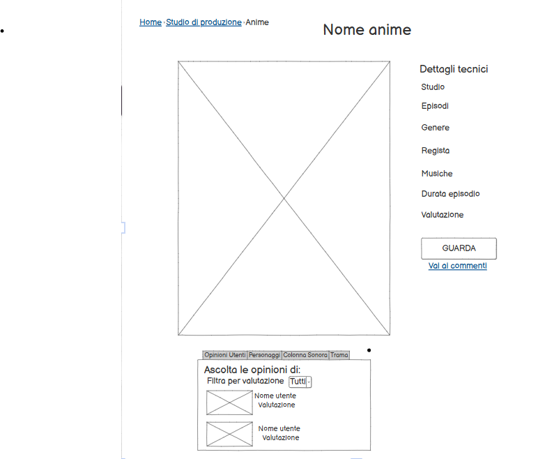

Idea
L'idea alla base di questo sito web è quella di creare uno spazio interattivo dedicato agli anime, pensato per un pubblico giovane e appassionato. Non si tratta solo di una piattaforma informativa e multimediale, ma anche di un luogo in cui gli utenti possono scoprire nuove serie, conoscere gli studi di produzione più influenti e condividere le proprie opinioni. Per rendere l'esperienza ancora più coinvolgente il sito offrirà una sezione commenti, dove gli utenti potranno discutere delle migliori scene del loro anime preferito, analizzare i momenti più emozionanti e confrontarsi con altri appassionati. Inoltre, una delle missioni del progetto è far conoscere le storie avvincenti degli anime più celebri, approfondendo il lavoro di alcuni dei migliori studi di animazione giapponesi. Dal punto di vista strutturale il sito avrà una homepage intuitiva e dinamica che guiderà gli utenti attraverso tutte le funzioni disponibili. Una nav bar permetterà loro di accedere facilmente alle sezioni principali, tra cui:
- i vari studi di Animazione con approfondimenti su case di produzione come Toei Animation, Mappa, Studio Ghilbi e Pierrot e ovviamente i loro anime di maggior rilievo;
- Opinioni e Commenti, per permettere agli utenti di discutere le scene più iconiche;
Per lo sviluppo della piattaforma sono stati utilizzati strumenti come Visual Studio Code per la programmazione e la gestione del codice, GitHub per il versionamento, e risorse come Reddit, Wikipedia e YouTube per ispirazioni visive e contenuti multimediali (oltre alla mia conoscenza personale).
Brief
Finalità e obiettivi del progetto
Tokyo Community è una pagina web che gira intorno intorno al mondo degli anime giapponesi, si propone di offrire agli utenti un'esperienza coinvolgente e completa in questo mondo (per alcuni) ancora sconosciuto e avvolte riempito di pregiudizi specialmente tra le nuove generazioni. L'obiettivo è quello di semplificare la vita degli appassionati o delle persone che vorrebbero interfacciarsi con questo mondo. Tokyo Community offre, oltre ad un vasto catalogo informativo su alcuni (secondo noi) gli anime più amati dai giovani, la possibilità di condividere pensieri e emozioni attraverso commenti e di catturare le loro citazioni o scene preferite in un unico e accattivante ambiente online non fermandosi solo alla serie in sè ma offrendo anche un piccolo excursus sui vari studi di produzione.
Pubblico di riferimento
Tokyo Community è la piattaforma ideale per un pubblico giovanile, con un'età compresa tra i 14 e i 25 anni. Pensato per una community vivace, dinamica e genuina. Tokyo si distingue per il suo layout accattivante, uno stile di scrittura fresco e una navigazione semplice e comoda ideale anche per quei ragazzi che fino ad ora non hanno mai avuto in mano un computer, il tutto progettato per catturare l'attenzione e l'entusiasmo dei suoi utenti con immagini accattivanti e trame No-Spoiler altrettanto coinvolgenti. L'accesso ai contenuti della piattaforma è immediato e, grazie a un design moderno e intuitivo, gli utenti possono facilmente scoprire nuove serie e comunicare con altri appassionati di anime.
Accesso alla risorsa
La giovane età dell'audience di riferimento e il fatto che molte trame e commenti siano ben articolate, implica che la maggior parte degli utenti accederà alla piattaforma principalmente tramite personal computer e ipad. Pertanto, la progettazione dell'interfaccia si concentra su questi dispositivi, garantendo un'esperienza ottimale su schermi di dimensioni medio-grandi. Sconsigliamo vivamente la visione o la lettura di contenuti tramite smartphone specialmente per evitare l' elevato attaccamento dei nostri ragazzi a piccoli schermi che sta nuocendo alla loro vista. Gli utenti possono navigare facilmente attraverso il sito, leggere trame e opinioni di altri utenti sui loro anime( o manga) di maggiore interessamento, commentare e condividere le loro esperienze
Contenuti
Per quanto riguarda i contenuti, Tokyo Community integra una varietà di media, tra cui testi immagini e video per offrire agli utenti un'esperienza coinvolgente. Attraverso apposite sezioni, gli utenti possono accedere ai vari studi di produzione (a chi interessa troverà anche un mini racconto sulla storia di questi ultimi) e ai loro anime di maggiore successo dove potranno leggere le loro trame e, in caso di interessamento, saranno reindirizzati in pagine dedicate. Dove troveranno altre informazioni relative unicamente all' anime selezionato. Le varie sezioni sono accompagnate da immagini che miglioreranno ulteriormente l'esperienza visiva degli utenti, consentendo loro di esplorare l'interfaccia grafica in modo più piacevole e coinvolgente.
Benchmark
Idea
Al giorno d'oggi, trovare siti che offrano la possibilità di poter leggere brevemente le trame di diversi anime e guardarli è diventato abbastanza comune. Tuttavia, è raro riuscire trovare piattaforme che non solo consentano un' approfondimento sull' anime, ma offrano anche la possibilità di pubblicare citazioni preferite o poter commentare ed avere un dibattito sulle loro scene preferite, con la capacità di filtrare questi commenti. Inoltre non è semplice trovare un sito che divida gli anime anche in base allo studio di produzione che sia accattivante, facile da utilizzare, in italiano e completamente responsive.
Contenuti Esistenti
Internet Archive
YouTube
Reddit
AnimeUnity
È un archivio generico che contiene oggetti digitali differenti tipologie di categorie: testi, libri, film, video, audio, podcast, musica, pagine web.
Tuttavia, oltre che avere una grafica comune e semplice, è molto difficile da esplorare: non sono presenti le briciole di pane e la barra di navigazione è confusionaria.
YouTube è un sito che fornisce molti spunti utili per la visualizzazione di scene di anime e poter commentarle (anche se spesso i commenti e i contenuti sono in inglese o in lingua originale). In particolare è stato deciso di ripredere proprio questo servizio.
Da notare, però, che YouTube non offre un forum generale in cui i commenti possano essere filtrati in base all' anime e/o il topic. Inoltre, la sua grafica, molto semplice e comune, e la presenza di pubblicità non rendono l'esperienza utente ottimale. Il sito è ben strutturato, ma la barra di navigazione principale è molto confusionaria. Inoltre, è presente solamente una barra di ricerca, il che può compromettere la sua facilità d'uso.
Reddit, come Tokyo Community, offre la possibilità di pubblicare citazioni sugli anime e spesso e qui che vengono riportate le ultime uscite di nuovi manga o anime. Il problema è la pagina molto confusionaria con titoli scritti usando caratteri molto piccoli (quasi da confondersi con un testi normali), inoltre è presente una sola barra di navigazione senza la possibilità di filtrare l' anime in base allo studio di produzione e privo di immagini. Possiamo dire che alla fine Redirect non sia altro che un enorme zuppa di informazioni senza ordine e privo di coinvolgimenti da parte degli utenti, anche se a quest' ultimo si deve il tema e la missione principale di Tokyo Community:
- Far conoscere alle uove genrazioni il mondo degli anime
- Poter fornire informazioni utili su nuove uscite e/o anime già esistenti
Una piattaforma che offre la possibilità di guardare anime in streaming gratuitamente. AnimeUnity è molto popolare tra gli appassionati di anime italiani, grazie alla sua vasta libreria di titoli e alla possibilità di guardare gli episodi in lingua originale con sottotitoli in italiano.
Tuttavia, il sito presenta alcune limitazioni. La qualità dello streaming può variare e spesso ci sono interruzioni pubblicitarie che possono disturbare l'esperienza di visione. Inoltre, la navigazione del sito non è sempre intuitiva e può risultare difficile trovare specifici episodi o serie.
Per non parlare poi del fatto che le trrame sono poche esaustive e gli approfondimenti sui dettagli tecnici di pgni anime sono inesistenti
Struttura
Mappa dei concetti
Per la creazione della mappa è stato necessario utilizzare alcuni elementi della modellazione concettuale. Quindi, utilizzare un diagramma E-R nella quale abbiamo entità, rappresentate da rettangoli, relazioni, rappresentati da rombi, e gli attributi.
Schema delle dipendenze
Dalla home page, mediante la NavBar è possibile raggiungere le varie sezioni in cui è divisa:
- Chi siamo
- Studio Ghilbi
- MAPPA
- Toei Animation
- Pierrot
- Opinioni e Commenti
.png)
Categorie di un item folgia
- Nome Anime
- Home>NomeStudio>Anime
- Main
- Immagine copertina
- dati tecnici
- bottone guarda
- indirizzamento sezione commenti
- valutazione
- Sezione opinioni utenti
- filtro video recensione in base alla valutazione
- video recensioni utenti
Layout
HomePage
Sul uno sfondo accattivante la pagina si struttura con un titolone accattivante, capace di ingrandirsi e illuminarsi al passaggio del mouse, e subito in basso una navbar con cui si ha la possibilità sia di navigare all' interno della stessa home-page che andare in altre pagine. Per fare in modo che l' utente abbia sempre la possibilità di muoversi in altre pagine, o in altre sezioni, navbar e titolo rimangono sempre fissi. La homepage è il fulcro dell'applicazione web e offre diverse sezioni:
- Una breve descrizione sul di noi e la nostra missione.
- Sezioni dedicate ai vari studi con immagini e titolo dei 5 anime più famosi prodotte dai vari studi
- Un footer con i nostri canali social e i nostri contatti
Studio Ghilbi
Un menù doprdown e una freccia sono sempre presenti in alto a sinistra e in allto a destra così che l' utente possa sempre riuscire a navigare all' interno della pagina e riuscire a tornare alla pagina precedente.
Oltre alla storia dello studio e una linea del tempo, sono riportate delle card dove l' utente è in grado di leggere la trama di uno dei 5 anime scritti:
- La città incantata
- Il mio vicino Totoro
- Principessa Mononoke
- Il castello errante di Howl
- Kiki- coonsegne a domicilio
MAPPA
- L' attacco dei giganti
- Banana Fish
- Dororo
- Jujutsu Keisen
- Vinland Saga
Toei Animation
- Dragon Ball Z
- Ken il guerriero
- OnePiece
- Sailor Moon
- I cavalieri dello zodiaco
Pierrot
- Black Clover
- Naruto
- Bleach
- Tokyo Ghoul
- Yu Yu Hukusho
Sezione Commenti
In alto torviamo un titolo e un breve racconto sulle mtivazioni che ci hanno spinto a creare una sezione commenti e alcune regolette da dover rispettare così da avere un pubblico sempre più vasto e genuino.
Una search bar di consente di filtrare i commenti in base al titolo dell' anime e successivamente in base al topic dell' anime. Accanto ci sarà un pulsante "Pubblica Commento" che una volta cliccato farà aprire un modale, una volta riempito il modale il commento sarà esaminato da un algoritmo di moderaione per verificare se rispetta i canoni riortati nel regolamento.
aggiungi commento
Questo modale compare nel momento in cui l' utente clicca sul pulsante "Pubblica Commento". Una volta aperto il modale, l' utente potrà scrivere il suo commento e cliccare sul pulsante "Save Changes" per pubblicarlo. Il commento sarà esaminato da un algoritmo di moderazione per verificare se rispetta i canoni riportati nel regolamento, all' utente basterà inserrire un nickname identificativo (magari in futuro potrebbe essere implementato un sitema di registrazione), l' anime a cui il commento fa riferimento con il topic di cui si vuole parlare (esempi topic: "news", "finale", "Scontro tra Naruto e Sasuke", "Morte di Ken Kaneki"....) e infine il contenuto testuale.
filtra per data
Questo modale compare nel momento in cui l' utente clicca sul pulsante "Filtra per data". Una volta aperto il modale, l' utente potrà filtrare l' elenco di anime presente nella pagine e riflessi anche sulla linea del tempo, in base ad un range temporale specificato
pagina anime
Infine cliccando sull' immagine o sul titolo dell' anime si accede ad una pagina dedicata appositamente all' anime selezionato. In questa pagina, oltre a delle briciole di pane sempre presenti, troviamo l' immagine di copertina dell' anime, una piccola sche da con i dettagli tecnici, un bottone per vedere l' anime, un link per accedere alla sezione commenti e una valutazione complessiva. Infine in basso troviamo una sezione dedicata ai video commenti dei nostri utenti con la valutazione assegnata all' anime da questi ultimi. Nel video l' utente esporra in un commentary le ragioni per cui hanno assegnato quella valutazione, ovviamente i video sono processati dall' algoritmo di moderazione.
Usabilità
Architettura
Per quanto riguarda l'architettura, sono stati implementati diversi accorgimenti.
I titoli sono riportati in alto e in modo chiaro con un font più grande rispetto al resto del testo che richiama molto i caratteri giapponesi ('Oswald', sans-serif;). Mentre per i semplici contenuti testuali è stato adottato un font 'Poppins', sans-serif. Una barra di navigazione appena sotto il titolo principale sempre visibile, in caso di mancaza di quest' ultima è presenteo un menù dropdown (che ha lo stesso scopo della navbar, cioè favorire all' utente la navigazione) a destra del body della nostra pagina.
Altri accorgimenti più generali:
- Sono stati utilizzati numerosi box e card per strutturare il contenuto in diverse sezioni tematiche.
- Sono stati utilizzati dei modali per coinvolgere maggiormente l'utente nell'interazione con l'applicazione (sezine commenti e filtro per data).
Apetto e tipografia
Per quanto riguarda il layout sono stati adottati i seguenti accorgimenti:
- tutti gli elementi simili hanno dimensione e stile pressoché uguali (bottoni, card, icone), escluse le altezze delle card che si adattano alla lunghezza della trama
- la palette di colori è la stessa in tutte le pagine del sito (nero, bianco, celestino* sono i principali)
- sono stati utilizzati titoli con caratteri più grandi per attirare l'attenzione su elementi importanti della pagina
(* è stato scelto proprio quel celeste perchè richiamava molto all' immagine usata come sfondo della home page)
Per quanto riguarda la scrittura:
- è stato scelto un font con una leggibilità molto alta e che mantenga uno stile abbastanza professionale, Poppins', sans-serif, che comunque richiamasse un minimo lo stile dei caratteri giapponesi
- sono stati utilizzati testi semplici e le trame sono state scritte il più breve possibile, senza perdere di interesse
- le immagini sono chiare e i loro colori accesi fanno un buon contrasto con il nero dello sfondo delle cards e delle sezioni
Siccome le informazioni da veicolare erano tante, si è deciso di ricorrere alla strategia della rivelazione progressiva. Nella home, ad esempio, sono presenti solo titoli, immagini dei vari studi e dei vari anime. Mediante scritte e immagini cliccabili è possibile raggiungere una pagina di approfondimento. Le pagine di approfondimento girano intorno allo studio, ma sempre tramite il click delle immagini è possibile evitare di accedere alla sezione dello studio e passare direttamente alla sezione dedicata all' anime qual' ora la storia dello studio di produzione non dovesse interessare. Una volta approfindito lo studio di produzione e letto brevemente la trama dell' anime, cliccando sull' immagine o sul titolo di questi ultimi si può accedere ad un' ulteriore pagina di approfondimento stavolta dedicata all' anime selezionato: dati tecnici, opinioni di altri utenti, valutazione e accesso agli episodi.
Servizi
Strumenti di browsing
Per quanto riguarda gli strumenti di browsing utilizzati abbiamo:
- Nav bar nella sezione commenti e nella page di ogni studio
- Briciole di pane
- In ogni pagina dedicata ad un anime è presente nel menù dropdown con un indice di parole chiave
- Pagination
- Search bar per filtrare i commenti in base al titolo dell' anime o del topic
- Sono presenti linee del tempo nelle pagine di ogni studio
- E' presenta un sistema di filtraggio degli anime di uno studio in base ad un range temporale
- Sarch bar per filtrare gli anime di uno studio in base al nome
- Icone cliccabili che rendeo più semplice l' interazione con un commento
Strumenti di interazione
Durante la realizzazione del progetto, sono stati impiegati diversi strumenti di interazione per garantire un'esperienza coinvolgente agli utenti. Tra questi, si è fatto largo l' uso di elementi come i bottoni, le card, i dropdown, modali con interno degli input di testo, tab viewer, serach bar e navbar. Questi componenti consentono agli utenti di interagire con il sito in modo intuitivo e dinamico; caratteristiche rese possibile anche grazie al fatto che ogni link cambia forma e/o colore ala passaggio del mouse o alla presenza di alcune icone bootsrap cliccabili presenti su ogni commento.
Dove si potrebbe migliorare e/o aggiungere funzionalità?In primo luogo, sarebbe vantaggioso collegare i link social nella home ai rispettivi profili, offrendo agli utenti la possibilità di connettersi facilmente con i canali social dell'azienda. Questo favorirebbe l'interazione e la condivisione di contenuti. Quindi implementare un sistema di registrazione per gli utenti
Un'altra area di miglioramento potrebbe riguardare l'espansione delle card per la descrizione degli anime come con un menù dropdown. (In questo caso non è stato implementato essendo che per ora ogni pagina comprende solo 5 anime e quindi non si è ritenuto necessario)
Si potrebbe collegare il bottone guarda con un sito di streaming (esempio Netflix, Amazon Prime, Crunchyroll) per permettere agli utenti di guardare l' anime direttamente dal nostro sito.
Fare una sezione dedicata non solo all' anime di per ssè ma anche (come nel 99.9% dei casi) al manga da cui è stato tratto.
Bibliografia e sitografia
- Per le mappe e i wireframe:
- Per i contenuti:
- draw.io
- balsamiq
- Wikipedia
- Anime Unity